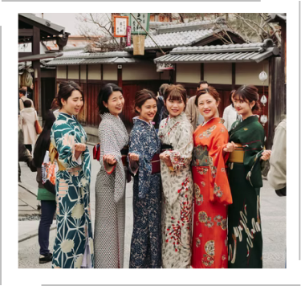
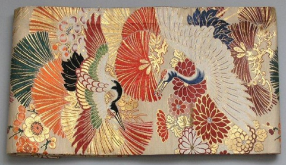

Kimono là trang phục truyền thống của đất nước Nhật Bản. Trước đây, Kimono được cả đàn ông và phụ nữ sử dụng như trang phục hàng ngày. Tuy nhiên, ngày nay chỉ có phụ nữ Nhật mặc Kimono là chủ yếu còn người đàn ông Nhật thường chỉ mặc Kimono trong các dịp lễ truyền thống hoặc trong các đám cưới.
Trang phục truyền thống Nhật Bản Kimono được du nhập vào Nhật Bản khoảng đầu thế kỷ thứ 7. Đây là thời đại của vua Heian. Được sáng tạo từ những bộ đồ lót bằng cotton thành một kiểu đặc trưng, đẹp và cầu kỳ hơn. Theo thời gian, Kimono chính thức được người Nhật đón nhận và trở thành quốc phục của Nhật Bản.

Để có được một bộ Kimono đẹp, độc đáo, người thiết kế phải chỉn chu trong từng bước. Từ khâu chọn vải, chọn màu, trang trí hoa văn đến việc lựa chọn phụ kiện đi kèm. Kimono được thiết kế gồm 8 mảnh ghép có thể điều chỉnh kích thước sao cho phù hợp với người mặc và được trang trí bằng hoa văn hoặc nhuộm. Màu sắc của trang phục Kimono thường biểu thị các mùa trong năm và mỗi tầng lớp trong xã hội cũng có màu sắc riêng.
Theo truyền thống của Nhật, Kimono được may từ các loại vải dệt từ thiên nhiên như vải bông, vải lanh, vải lụa. Riêng mùa hè, áo Kimono được làm bằng vải cotton.
Furisode: Được thiết kế dành cho những cô gái chưa chồng với tay áo rất rộng và dài ( khoảng 95 cm đến 115 cm). Chất liệu bằng lụa và màu sắc tươi sáng.
Yakata: Với thiết kế đơn giản và dễ mặc, Yakata được cả đàn ông và phụ nữ chọn mặc vào mùa hè, trong ngày Bon-Odori hoặc trong các ngày hội hè. Yakata được làm từ chất liệu cotton bình thường.
Houmongi: Trang phục này được dùng trong dịp lễ như tiệc trà hoặc đám cưới của những người phụ nữ đã kết hôn.
Tomesode: Được thiết kế với ống tay áo ngắn hơn áo Kimono truyền thống. Dành cho những người phụ nữ đã có chồng. Áo Tomesode màu đen chỉ mặc vào các dịp lễ như đám tang hay đám cưới của họ hàng.
Shiromaku: Đặc điểm của trang phục này là màu trắng, tỏa tròn và độ dài đến chạm đất. Được dùng cho cô dâu trong đám cưới truyền thống của Nhật Bản.
Tsumugi: Loại Kimono này dành cho tầng lớp nông dân. Thiết kế theo dạng hoa văn chạy dọc lưng áo và thân rồi gặp nhau ở đỉnh vai. Thường mặc vào các buổi tiệc cắm hoa, trà đạo hoặc đám cưới của bạn bè.
Thắt lưng Obi: Dành cho phụ nữ thường có chiều rộng khoảng 60 cm và chiều dài khoảng 4m. Được quấn hai vòng quanh thắt lưng và thắt đằng sau lưng. Các phụ kiện đi kèm Obi là Koshi-himo Koshi-himo, Date-jime, Obijime, Chocho.

Heko bi và Kaku: Là phụ kiện dành cho Kimono nam, với chiều dài là 3,5 inch, làm bằng vải cotton.
Ngoài ra, người Nhật còn dùng những phụ kiện khác như Taiko-musubi, dây cài lưng, trâm cài đầu và guốc gỗ.
Khi mặc Kimono, người mặc phải tuân theo đúng nguyên tắc riêng của trang phục này: quấn bên phải vào trước rồi quấn đến bên trái. Lưu ý chỉ được quấn ngược lại khi đi dự tang lễ. Tùy vào từng lứa tuổi, tầng lớp xã hội và từng mùa để lựa chọn trang phục cho phù hợp.